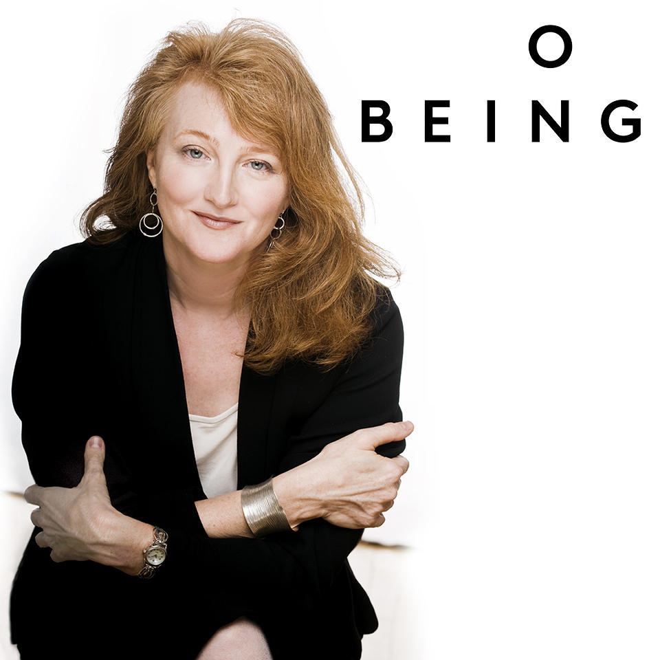

Canadian trying to immigrate to Australia so that I can support my wife who is attending medical school on the Gold Coast and ultimately stay. I love self-improvement and listening to people tell me about their stories. Programming is fun because it makes me happy when it my program does something useful.
| Host | Podcast |
|---|---|
Sam Harriss Waking Up
Sam is dedicated to sifting through ideas no matter the political turmoil doing so may provoke. a free-thinker whom loves exploring many concepts such as conciousness, morality, our role in life and many more. |
|
|  | Krista Tippett On Being
Krista is able to consistantly parse out meaning from the complicated threads of life she follows. Her commitment to interview / interviewee relationship is rarity it todays permiable world. It keeping to traditional interview styles she is able to better explore the interviewee's perspective; rather than using her podcast to parrot her own narritive. |
Tim Ferriss The Tim Ferriss Show
I've listened to so many podcasts by Tim at this point in my life that I'm starting to mistake him for a real friend. His analytical way of viewing the world can be seem pedantic at first, however, when embraced, reveals a whole new facet to life. |